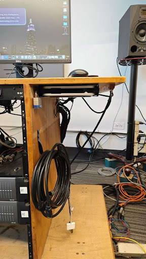
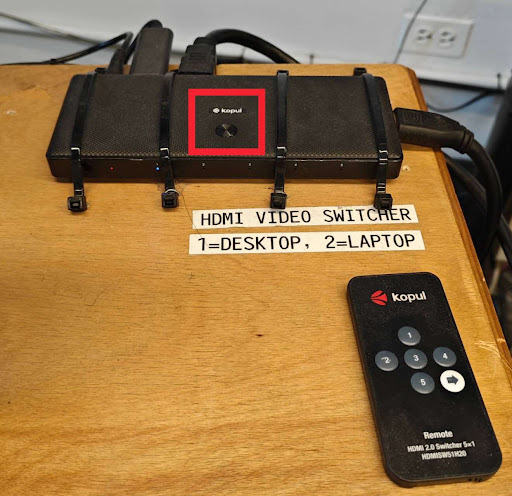
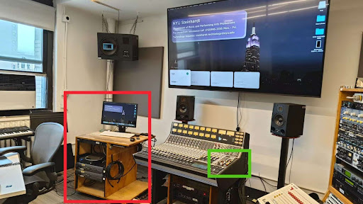

Studio D
Room PC Video
Red: The main desk, access to studio Mac, and video related utilities. Remote will be placed on the desk, studio Mac can be found under the desk. The HDMI adapter is on the rack down the desk. The HDMI source switcher is on the desk.
Green: This small right section of the console will provide buttons and knobs for straightforward audio setup if audio playback is needed. The headphone audio jack can be found near this area.

If the Mac is off, turn it on from under the desk.
Ensure Desktop is selected on the HDMI Switcher.
Laptop Video
Red: Main desk with studio Mac, remote, HDMI adapter on rack, and source switcher
Green: Audio controls and headphone jack
If the Mac is off, turn it on from under the desk.
Ensure Laptop is selected on the HDMI Switcher.
[PLACEHOLDER: Additional laptop setup instructions]